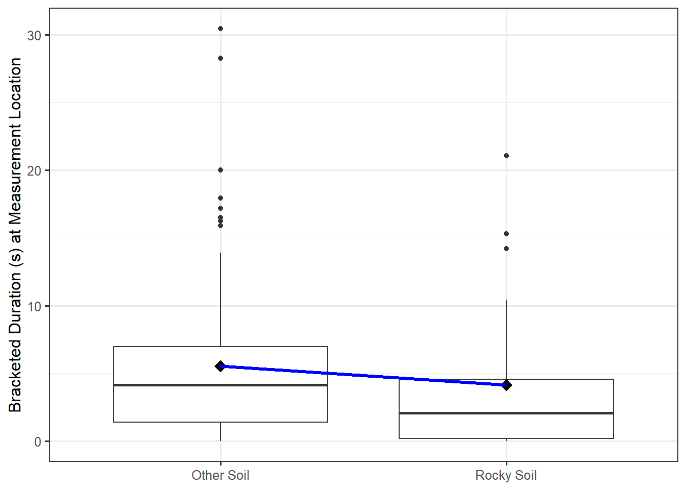
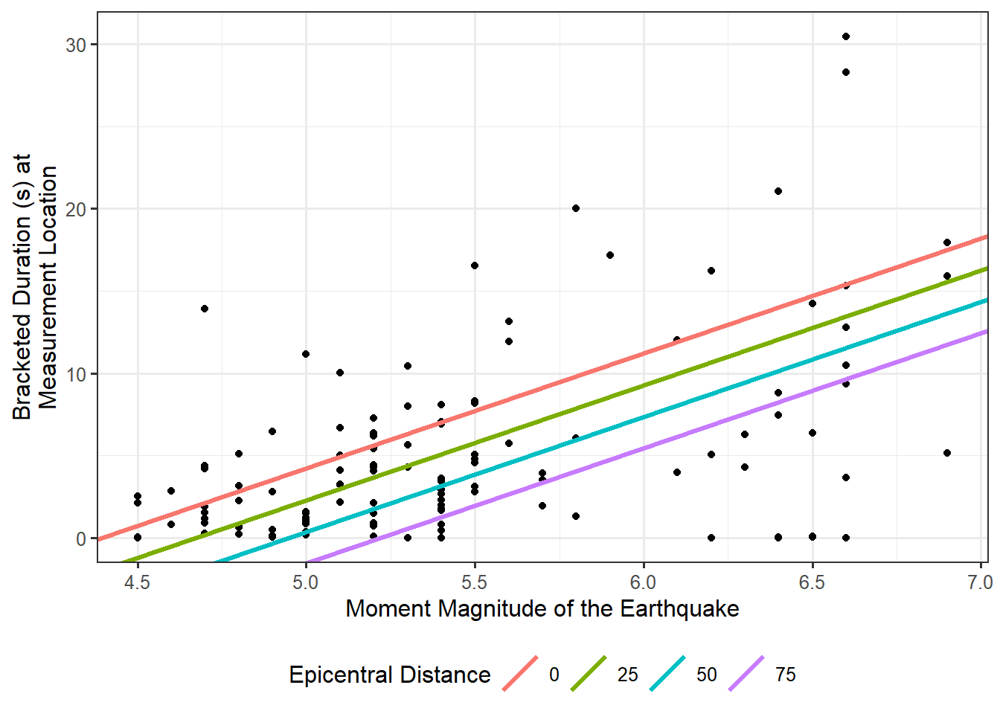
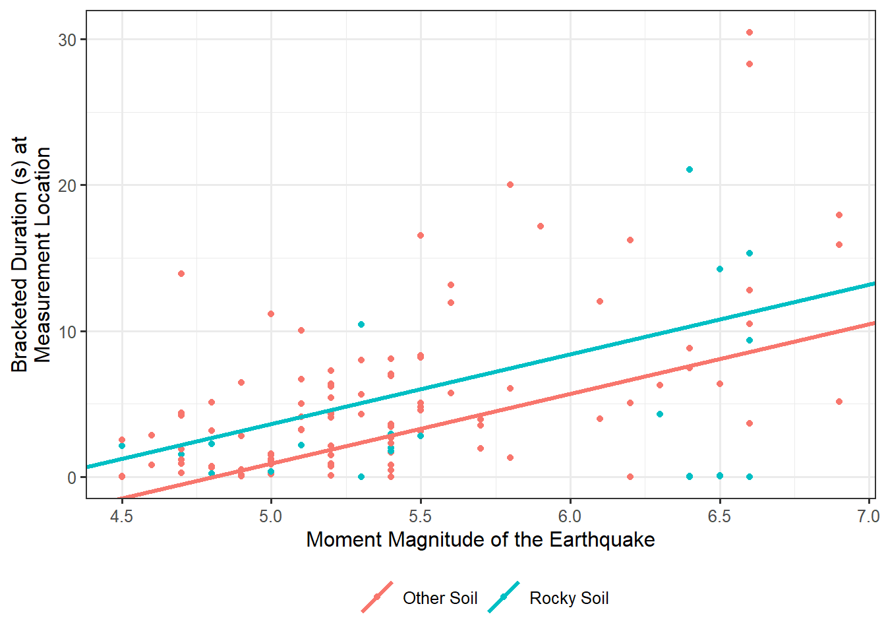
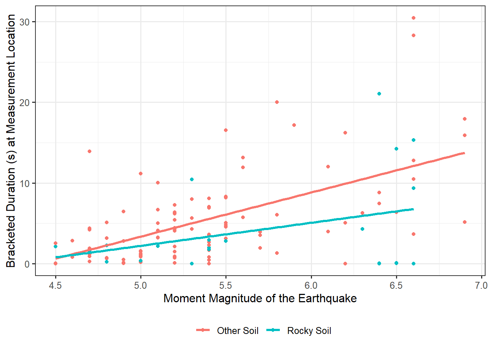

| Soil Condition | n | Sample Mean | Sample Standard Deviation |
|---|---|---|---|
| Intermediate | 43 | 5.16 | 4.52 |
| Rocky | 24 | 4.14 | 5.72 |
| Soft | 52 | 5.86 | 6.73 |
21 Extending the Regression Model
The last several chapters have developed an approach for modeling a quantitative response as a function of a single quantitative predictor using a model of the form:
\[(\text{Response})_i = \beta_0 + \beta_1 (\text{Predictor})_i + \varepsilon_i.\]
This model is well suited for addressing questions about the marginal relationship between two variables. However, as we saw in Chapter 14, not all our questions are about the marginal relationship. The real power of the model in Equation 10.1 is our ability to generalize it to encompass multiple predictors and various types of relationships. In this chapter, we briefly describe how to extend the regression model to address some additional questions of interest.
While this chapter can be considered optional for an introductory treatment to modeling, the concepts discussed here allow us to easily bridge into the remaining topics covered in later units.
21.1 Using a Categorical Predictor
We have described the simple linear model (Equation 17.3) as one which relates two quantitative variables. However, this framework can be extended to make use of a categorical predictor. Specifically, we will consider a binary predictor which categorizes units into one of two groups. More general categorical predictors will be considered in the next unit.
Continuing to work with the data from the Seismic Activity Case Study, Table 21.1 summarizes the bracketed duration at locations based on the soil conditions.
We observe that the bracketed duration appears to differ, on average, for locations with rocky soils compared to other types of location. We would like to consider a model for the data generating process of the form
\[(\text{Bracketed Duration})_i = \beta_0 + \beta_1 (\text{Soil Condition})_i + \varepsilon_i,\]
but the problem is that we do not know how to multiply a number \(\beta_1\) and a category like “rocky soil,” meaning the above model does not yet even make sense. The key to including a categorical variable in the model for the data generating process is to construct an indicator variable.
Definition 21.1 (Indicator Variable) An indicator variable is a binary (takes the value 0 or 1) variable used to represent whether an observation belongs to a specific group defined by a categorical variable.
Indicator variables essentially create a numeric variable which represents a yes/no decision regarding a categorical variable. For example, consider the following variable definition:
\[ (\text{Rocky Soil})_i = \begin{cases} 1 & \text{if } i\text{-th location has rocky soil} \\ 0 & \text{if } i\text{-th location has a different soil type}. \end{cases} \]
Since this variable is numeric, we can use it in our model for the data generating process. Specifically, consider the following model
\[(\text{Bracketed Duration})_i = \beta_0 + \beta_1 (\text{Rocky Soil})_i + \varepsilon_i \tag{21.1}\]
With a variable capturing when the soil is rocky, we might be tempted to include another indicator variable that takes the value 1 when the soil is not rocky. But, this is not necessary. Think of an indicator variable like a “light switch.” The indicator variable turns on when an observation falls into a particular group and turns off otherwise. Just like a single light switch can place a light into the “on” position and into the “off” position, a single indicator variable can capture two groups in the model for the data generating process. If we have a location which has “Intermediate” soil conditions, then that location cannot have “Rocky” soil; therefore, the indicator variable in our model turns off. Setting the indicator to 0 (turning it “off”) then leaves only the intercept in the model. The group which has a 0 for the indicator is encoded in the intercept; this is known as the reference group.
Definition 21.2 (Reference Group) The group defined by setting all indicator variables in a model for the data generating process equal to 0.
Remember, provided that we have imposed the mean-0 condition, we know that the deterministic portion of the model specifies the mean response for a given value of the predictor. In the case of an indicator variable, the predictor variable can only take on two values (0 or 1). Therefore, it only predicts two mean responses:
- When the indicator variable is 0, the model predicts a mean response of \(\beta_0\); and,
- When the indicator variable is 1, the model predicts a mean response of \(\beta_0 + \beta_1\).
So, the “slope” \(\beta_1\) is really capturing the shift in the deterministic portion of the model from one group to the other. This coincides with the interpretation of the slope discussed in Chapter 18 — \(\beta_1\) represents the change in the mean response when moving from one group to another. That is, the slope represents the difference in the average response between the two groups.
Interpretation of the Parameters
Suppose we have a simple linear regression model (Equation 17.3) with a quantitative response and a single indicator variable as the sole predictor. Then, the intercept represents the average response for the reference group, and the slope represents the difference in the average response between the two groups.
This shift in the mean response is illustrated in Figure 21.1. The “line” is really connecting the sample mean response of each group.

21.2 Including Multiple Precitors
The real power of the model in Equation 10.1 is our ability to generalize it to encompass multiple predictors and various types of relationships. That is, suppose that instead of being interested in the marginal relationship between the bracketed duration and the magnitude of the corresponding earthquake we are interested in isolating the effect of the magnitude on the bracketed duration:
On average, does the bracketed duration change as the magnitude of the corresponding earthquake changes if the location remains the same distance from the center of the earthquake?
This question is asking if there is an effect of the magnitude of the earthquake above and beyond the impact due to a locations distance from the epicenter. This question requires a model which has multiple predictors. What bracketed duration would we expect given the magnitude and epicentral distance? We extend the simple linear model to include an additional predictor:
\[(\text{Bracketed Duration})_i = \beta_0 + \beta_1(\text{Magnitude})_i + \beta_2(\text{Epicentral Distance})_i + \varepsilon_i. \tag{21.2}\]
This more complex model is more difficult to visualize, but conceptually it is similar to the simple linear model in Equation 17.3. Given a value for the magnitude and epicentral distance, we can predict the bracketed duration; the model for the data generating process allows both variables to contribute to the bracketed duration. Our model for the data generating process also allows for random noise to contribute to the bracketed duration; that is, there will still be unexplained variability. One way of envisioning what this model does is to think about taking the linear relationship we previously had and observing that we are now saying that the deterministic portion of the model for the data generating process differs for each group of observations which have a different epicentral distance. For example, consider all locations which were located 10 km away from the center of an earthquake; for this group of earthquakes, Equation 21.2 suggests the bracketed duration is generated by
\[ \begin{aligned} (\text{Bracketed Duration})_i &= \beta_0 + \beta_1(\text{Magnitude})_i + \beta_2(10) + \varepsilon_i \\ &= \left(\beta_0 + 10\beta_2\right) + \beta_1(\text{Magnitude})_i + \varepsilon_i. \end{aligned} \]
Similarly, if we only consider locations which were located 32 km away from the center of an earthquake, then Equation 21.2 suggests the bracketed duration is generate by
\[ \begin{aligned} (\text{Bracketed Duration})_i &= \beta_0 + \beta_1(\text{Magnitude})_i + \beta_2(32) + \varepsilon_i \\ &= \left(\beta_0 + 32\beta_2\right) + \beta_1(\text{Magnitude})_i + \varepsilon_i. \end{aligned} \]
Figure 21.2 represents this graphically for a range of potential epicentral distances. Essentially, the relationship between the bracketed duration and the magnitude shifts depending on the epicentral distance. The overall trend is similar (the lines are parallel), but where the line is located is really dependent upon the distance of the location from the earthquake. Note that while Figure 21.2 chooses particular values for the epicentral distance, we could have easily made an analogous graphic which chooses values for the magnitude and envisions the relationship between the bracketed duration and the epicentral distance for each of these choices.

This model has what may appear as an obvious requirement; you cannot use this model to predict the bracketed duration without specifying both the magnitude of the earthquake and the epicentral distance of the location. However, it also isolates the effect of the magnitude above and beyond the epicentral distance.
21.2.1 General Model Formulation
Nothing limits us from the inclusion of several predictors. Each predictor is simply added to the model.
General Linear Regression Model
For a quantitative response and one or more predictors, the general form of the linear regression model is
\[ \begin{aligned} (\text{Response})_i &= \beta_0 + \beta_1 (\text{Predictor 1})_i + \beta_2(\text{Predictor 2})_i + \dotsb + \beta_p (\text{Predictor } p)_i + \varepsilon_i \\ &= \beta_0 + \sum_{j=1}^{p} \beta_j (\text{Predictor j})_i + \varepsilon_i \end{aligned} \tag{21.3}\]
where \(\beta_j\) for \(j = 0, 1, 2, \dotsc, p\) are the \(p + 1\) parameters governing the model for the data generating process.
Note
The predictors in Equation 21.3 can be quantitative variables or indicator variables (Definition 21.1).
The problem, of course, is that the parameters (the \(\beta\)’s in the model) are unknown. However, we can use the method of least squares to estimate each of the parameters simultaneously.
Definition 21.3 (Least Squares Estimates for General Linear Model) The least squares estimates for a general linear model (Equation 21.3) are the values of \(\beta_0, \beta_1, \beta_2, \dotsc, \beta_p\) which minimize the quantity
\[\sum_{i=1}^n \left[(\text{Response})_i - \beta_0 - \sum_{j=1}^{p} \beta_j(\text{Predictor } j)_{i}\right]^2.\]
This minimization procedure is implemented in any statistical software package.
21.2.2 Interpretation of Parameters
The same conditions described in Chapter 18 can be placed on the stochastic portion of the model for the data generating process. Just as with the simple linear model, assuming the model is correctly specified (imposing the mean-0 condition) provides us with an interpretation of each of the parameters.
Consider the model for the data generating process defined in Equation 21.2. If we assume that the error in the bracketed duration has an average of 0 regardless of the magnitude of the corresponding earthquake and the distance of the location to the center of the earthquake, then notice that we are saying the expression
\[\beta_0 + \beta_1(\text{Magnitude}) + \beta_2(\text{Epicentral Distance})\]
defines the average bracketed duration (given the magnitude of the earthquake and epicentral distance of the location).
Big Idea
If we impose the mean-0 condition, the deterministic portion of the general linear regression model specifies the mean response given the value of the predictors.
Therefore, we can interpret the value of \(\beta_2\) as the change in the average bracketed duration given a 1-kilometer increase in the distance a location is from the center of the earthquake for all locations which experience an earthquake of the same magnitude. This last part is important. In order to interpret one coefficient, we must hold the value of all other predictors fixed.
Interpretation of Parameters
For the general linear model (Equation 21.3), the intercept \(\beta_0\) is the average response when all predictors are set equal to 0. The \(j\)-th coefficient \(\beta_j\) represents the average change in the response associated with a 1-unit increase in the \(j\)-th predictor holding the value of all other predictors constant.
This phrase “holding the value of all other predictors constant” has extreme power. It is because of this phrase that we are able to take our first steps toward addressing confounding. For example, consider the model for the data generating process in Equation 21.2. Using the method of least squares, we estimate that for every kilometer further the epicenter of the earthquake is, we can expect the bracketed duration to decrease by 0.08 seconds, on average. Someone might argue as follows: “This is not a controlled experiment; therefore, while there is an association here, it is possible that what is really happening is that earthquakes which were further away tended to also be smaller in magnitude. Therefore, it is not the distance that is driving this observed association but the magnitude of the earthquake.” Here, this individual is saying that the earthquake’s magnitude is a confounder — related to both the bracketed duration (response) and the variable of interest (distance from the epicenter). If we had fit a marginal model, this would be a valid concern. However, remember our interpretation of \(\beta_2\) (and our estimate of it) — our fit suggests that for every kilometer further the epicenter of the earthquake is, we can expect the bracketed duration to decrease by 0.08 seconds, on average, holding the magnitude of the earthquake constant. Therefore, since this estimate is comparing two earthquakes of the same magnitude, magnitude cannot be confounding the relationship observed. We have isolated the effect of the epicentral distance from any effect due to the magnitude.
Our solution to confounding is to incorporate the relationship between the confounder and the response into our model for the data generating process. Then, any remaining variables cannot be affected by the confounder. Of course this has one major limitation — we cannot account for any variables which are not recorded.
There are entire texts devoted to the topic of addressing confounding. Here, we simply emphasize that regression models allow us to control for the confounders we have observed. The relationships are “adjusted for” these confounders due to the interpretation that a coefficient is the effect “holding all other predictors constant.” Regression models allow us to compare similar groups, which are balanced on these confounders after the fact (instead of having addressed confounding through the design of the study).
21.2.3 Inference for the General Formulation
Above, we estimated the change in the average bracketed duration associated with a 1 kilometer increase in the distance from an earthquake while holding the magnitude of the earthquake fixed. However, as we have noted throughout the text, inference requires that we quantify the variability in those estimates.
The same processes that allowed us to model the sampling of the least squares estimates for the simple linear regression model, described in Chapter 18, are applicable for the general linear regression model as well. In particular, under the classical regression model (imposing all four conditions discussed in Chapter 18 on the error term), we can construct an analytical model of the sampling distribution of the least squares estimates (extensions of the results discussed in Appendix A). And, provided we are willing to impose the mean-0 condition and the independence condition, we can construct an empirical model of the sampling distribution using a bootstrapping algorithm. Once we have a model for the sampling distribution of our estimates, we can construct confidence intervals.
Table 21.2 provide a summary of using the data from the Seismic Activity Case Study to fit the model for the data generating process proposed in Equation 21.2; the confidence intervals were computed assuming the data was consistent with all four conditions of the classical regression model.
| Term | Estimate | Standard Error | Lower 95% CI | Upper 95% CI |
|---|---|---|---|---|
| (Intercept) | -30.715 | 4.887 | -40.395 | -21.036 |
| Magnitude | 6.991 | 0.964 | 5.082 | 8.900 |
| Epicentral Distance | -0.077 | 0.021 | -0.118 | -0.036 |
From the output, we estimate that for every kilometer further the epicenter of the earthquake is, it is reasonable to expect the bracketed duration to decrease between 0.036 and 0.118 seconds, on average, holding the magnitude of the earthquake fixed.
If we are interested in comparing two models, we formulate a standardized statistic and model its null distribution. Suppose for the model we have been considering, we are interested in testing
\[H_0: \beta_1 = \beta_2 = 0 \qquad \text{vs.} \qquad \text{At least one } \beta_j \text{ differs from 0},\]
which corresponds to the following research question:
Does the study provide evidence that the average bracketed duration depends on either the magnitude of the earthquake or the epicentral distance?
Note the complexity of this question and the corresponding hypotheses. We are wanting to drop out two terms from the model for the data generating process. Just as in Chapter 19, the key to testing this hypothesis is to partition out the sources of variability. We can define the error sums of squares for the general linear regression model:
\[SSE = \sum_{i=1}^{n}\left[(\text{Response})_i - \sum_{j=1}^{p} \beta_j (\text{Predictor } j)_i\right]^2.\]
The above hypotheses suggest two alternate models for the data generating process. Under the alternative hypothesis, we have the full unconstrained model presented in Equation 21.2 (call that Model 1). Under the null hypothesis, we have a reduced constrained model for the data generating process (call it Model 0):
\[(\text{Bracketed Duration})_i = \beta_0 + \varepsilon_i.\]
If the null hypothesis is true, we would expect the amount of unexplained variability in Model 0 to be the same as the amount of unexplained variability in Model 1 \(\left(SSE_0 \approx SSE_1\right)\). That is, if the model under the null hypothesis is sufficient for explaining the variability in the bracketed duration, then it should perform as well as the full unconstrained model. If, however, Model 1 explains more of the variability in the bracketed duration (therefore leaving less variability unexplained) than Model 0, then this would indicate the null hypothesis is false. This suggests that a metric for quantifying the signal in the data is given by
\[SSE_0 - SSE_1,\]
where we use the subscript to denote the model from which the sum of squares was computed. As in Chapter 19, working with variance terms is easier than working with sums of squares analytically. And, we need to consider the size of the signal relative to the amount of background noise. This leads to a form of our standardized statistic which generalizes our result from Definition 19.7.
Definition 21.4 (Standardized Statistic for General Linear Model) Consider testing a set of hypotheses for a model of the data generating process of the form (Equation 21.3):
\[(\text{Response})_i = \beta_0 + \sum_{j=1}^{p} \beta_j(\text{Predictor } j)_i + \varepsilon_i.\]
Denote this model as Model 1, and denote the model that results from applying the parameter constraints defined under the null hypothesis as Model 0. A standardized statistic, sometimes called the “nested F statistic,” for testing the hypotheses is given by
\[T^* = \frac{\left(SSE_0 - SSE_1\right) / (p + 1 - r)}{SSE_1 / (n - p - 1)},\]
where \(p + 1\) is the number of parameters in the full unconstrained model (including the intercept) and \(r\) is the number of parameters in the reduced model. Defining
\[MSA = \frac{SSE_0 - SSE_1}{p + 1 - r}\]
to be the “mean square for additional terms,” which captures the shift in the error sum of squares from the reduced model to the full unconstrained model, we can write the standardized statistic as
\[T^* = \frac{MSA}{MSE}\]
where the mean square error in the denominator comes from the full unconstrained model. Just as before, the MSE represents the residual variance — the variance in the response for a particular set of the predictors.
The standardized statistics in Chapter 12 and in Chapter 19 are special cases of the one presented here. The numerator captures the signal by examining the difference between what we expect the error sum of squares to be under the null hypothesis and what we actually observe; the denominator captures the background noise (relative to the estimated mean response from the full model). Larger values of this standardized statistic indicate more evidence in the sample against the null hypothesis.
Table 21.3 provides a summary of partitioning the variability to test the hypotheses described above using the data from the Seismic Activity Case Study; the p-value was computed assuming the data was consistent with all four conditions of the classical regression model.
| Term | DF | Sum of Squares | Mean Square | Standardized Statistic | P-Value |
|---|---|---|---|---|---|
| Additional Terms | 2 | 1297.653 | 648.827 | 28.17 | < 0.001 |
| Error | 116 | 2671.787 | 23.033 |
Based on the results, the sample provides strong evidence (\(p < 0.001\)) that the average bracketed duration is associated with either (or both) the magnitude of the earthquake and the distance the location is from the center of the earthquake. Note that the p-value does not tell us the form of the relationship, or whether it is only one of the predictors that is important or both. Examining the confidence intervals provides that information. The confidence intervals also allow a discipline expert to determine if the signal we are discerning is meaningful in practice.
21.3 Modifying an Effect
There is one type of question we have not yet addressed — assessing the interplay between two variables on the response.
Consider the following question:
Is the relationship between the average bracketed distance and the magnitude different depending on whether the soil is rocky where the measurement is taken?
This question explains the bracketed duration in terms of both the magnitude as well as whether the soil is rocky. A first pass at such a model might be
\[ (\text{Bracketed Duration})_i = \beta_0 + \beta_1(\text{Magnitude})_i + \beta_2(\text{Rocky Soil})_i + \varepsilon_i \]
where we use an indicator variable to capture whether the soil is rocky just as before. Just as we did before, we can graphically represent this model (see Figure 21.3), and we find that it is captured by two parallel lines.

The lines are parallel because the coefficient associated with Magnitude \(\left(\beta_1\right)\) is the same regardless of the type of soil. That is, regardless of whether the soil is rocky, the change in the bracketed duration, on average, for each 1-unit increase in the magnitude of an earthquake is the same. Our question of interest is essentially, is there evidence that this is not the case? So, the above model actually represents the model for the data generating process under the null hypothesis of our current question. Under the null hypothesis, the effect of the magnitude on the bracketed duration (which captures the relationship between these two variables) is the same regardless of soil condition. What we posited above is Model 0 which has an embedded constraint. The question is, how do we form the model for the data generating process which allows the slope to look differently depending on soil type? This new model would serve as our full unconstrained model, Model 1.
Consider adding an additional term to our model above, yielding the following model:
\[ \begin{aligned} (\text{Bracketed Duration})_i &= \beta_0 + \beta_1 (\text{Magnitude})_i + \beta_2 (\text{Rocky Soil})_i \\ &\qquad + \beta_3 (\text{Magnitude})_i (\text{Rocky Soil})_i + \varepsilon_i \end{aligned} \]
This additional term is formed by taking the product of the indicator variable with the variable magnitude; such a product is known as an interaction term.
Definition 21.5 (Interaction Term) A variable resulting from taking the product of two predictors in a regression model. The product allows the effect of one predictor to depend on another predictor, essentially modifying the effect.
In order to really see the impact of the interaction term, observe that if we impose the mean-0 condition, our model for the data generating process says the average bracketed duration for locations with rocky soil is given by
\[\left(\beta_0 + \beta_2\right) + \left(\beta_1 + \beta_3\right) (\text{Magnitude})\]
which comes from plugging in 1 for the indicator variable (representing rocky soils) and then combining terms. The model for the data generating process says the average bracketed duration for locations without rocky soil is given by
\[\beta_0 + \beta_1 (\text{Magnitude})\]
since we would plug in 0 for the indicator variable (representing soils that are not rocky). Therefore, our revised model for the data generating process that includes the interaction term allows both the intercept and the effect of the magnitude on the bracketed duration to differ for rocky soils and non-rocky soils. That is, the effect of magnitude is allowed to differ across the soil types.
Big Idea
It is common to believe that the interaction term measures the effect between the two variables in the product. However, this is incorrect. The interaction term allows the effect of one predictor to differ across the levels of another predictor.
Visually, this revised model allows two completely different associations — depending on the soil type. This is shown in Figure 21.4. Notice that the lines are no longer parallel. The question of course is which of the two models is more appropriate. Is there actually evidence that the more complex model, which allows the relationship to differ for locations with different soil types, is required? Or, is the more simplistic model, which says the relationship is the same across all locations of different soil types, sufficient?

We can capture our question of interest in the following hypotheses:
\(H_0: \beta_3 = 0\)
\(H_1: \beta_3 \neq 0\)
Notice that if the null hypothesis were true, then the slope would be the same regardless of whether the soil was rocky because we resort to Model 0 described above which only allows the intercept to vary across soil types. However, if \(\beta_3\) is nonzero in Model 1, then the slope will differ for the rocky soil. So, under the null hypothesis, the lines are parallel; under the alternative hypothesis, the lines are not parallel.
Conceptually, comparing these two models is just like any other hypothesis test. By partitioning the variability as described in the previous section, we are able to compute a signal-to-noise ratio. We can essentially determine how much variability in the response is explained is by the inclusion of the interaction term. That is, we quantify how the unexplained variability decreases when we include the interaction term in the model for the data generating process.
Specifically, Table 21.4 gives the estimates associated with each parameter, and Table 21.5 presents the corresponding partitioning of the sources of variability leading to the computation of the p-value. The confidence intervals and p-value are computed assuming the data is consistent with the conditions of the classical regression model.
| Term | Estimate | Standard Error | 95% Lower CI | 95% Upper CI |
|---|---|---|---|---|
| (Intercept) | -23.966 | 4.531 | -32.941 | -14.991 |
| Magnitude | 5.466 | 0.834 | 3.814 | 7.118 |
| Soil Conditions (Rocky) | 11.925 | 9.181 | -6.261 | 30.112 |
| Interaction: Magnitude & Rocky Soil | -2.614 | 1.626 | -5.835 | 0.607 |
| Source | DF | SS | MS | Standardized Statistic | P-Value |
|---|---|---|---|---|---|
| Additional Terms | 1 | 62.663 | 62.663 | 2.584 | 0.111 |
| Error | 115 | 2788.908 | 24.251 |
From our analysis, our data is consistent with (\(p = 0.111\)) the effect of the magnitude being the same across the various soil conditions. The sample provides no evidence that the association between the average bracketed duration and the magnitude of an earthquake depends on the soil conditions.